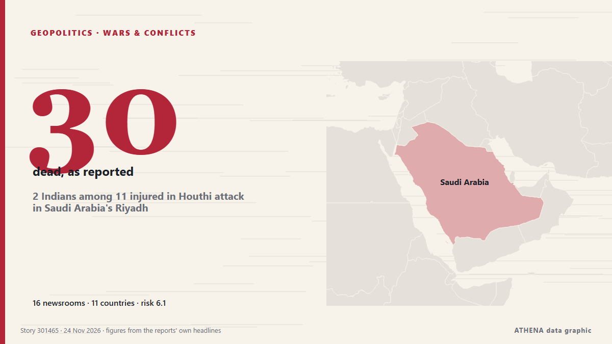

Πόλεμοι & συγκρούσεις
ΧορηγούμενοΠαρουσιάζεται από  Cybernetics and Artificial Intelligence Lab Welcome to the Cybernetics and Artificial Intelligence Laboratory, established at the Department of Business Administration of the National and Kapodistrian University of Athens. The lab is headed by Professor Dimitrios Thomakos. The lab aims to do research that can be published in top venues. Our research uses tools and methods of Artificial Intelligence, and lies in the following areas: - Forecasting - Decision making - Cyber security - Finance We are always looking forward to collaborating with exceptional students!
Cybernetics and Artificial Intelligence Lab Welcome to the Cybernetics and Artificial Intelligence Laboratory, established at the Department of Business Administration of the National and Kapodistrian University of Athens. The lab is headed by Professor Dimitrios Thomakos. The lab aims to do research that can be published in top venues. Our research uses tools and methods of Artificial Intelligence, and lies in the following areas: - Forecasting - Decision making - Cyber security - Finance We are always looking forward to collaborating with exceptional students!
| 11 Νοε | 0 |
|---|---|
| 12 Νοε | 0 |
| 13 Νοε | 0 |
| 14 Νοε | 1 |
| 15 Νοε | 3 |
| 16 Νοε | 0 |
| 17 Νοε | 0 |
| 18 Νοε | 0 |
| 19 Νοε | 1 |
| 20 Νοε | 7 |
| 21 Νοε | 4 |
| 22 Νοε | 3 |
| 23 Νοε | 4 |
| 24 Νοε | 0 |
Οι τίτλοι των ειδήσεων παρουσιάζονται στα αγγλικά, όπως δημοσιεύτηκαν.

2 Indians among 11 injured in Houthi attack in Saudi Arabia's Riyadh
Dubai: Two Indians and three Nepalese nationals were among 11 people injured on Tuesday when Yemen's Houthi militia targeted a tower in the financial district of Saudi Arabia's capital, authorities… από Deccan Herald
Headlines for November 24, 2026
Nvidia Reinstates Jensen Huang as CEO After Trump Intervenes, Trump’s Stake in Nvidia Grows by Up to $15 Million as Stock Price Soars on Jensen Huang’s Return, Analysis Estimates More Than 700,000… από Democracy Now!
UKRAINE’S NATO MEMBERSHIP COULD HAVE PREVENTED THIS WAR
Full NATO membership could provide Ukraine with more reliable and effective protection than separate Article 5-like security guarantees, whose practical implementation mechanisms have yet to be… από Ukrinform (English)
More than 700,000 Russian troops died in the war in Ukraine by late September 2026, Meduza and Mediazona estimate
On November 1, news broke that hackers from the Belarusian Cyber Partisans and Silent Crow had breached the website of Rosstat, Russia’s federal statistics agency, and obtained data on Russian… από Meduza (English)
Ukraine responds to Libya regarding attack on Russian warship in Benghazi Port: Right to self-defence
Ukraine’s official Foreign Ministry Spokesperson, Hyurohi Tykhi, responded to Libya’s criticism of Ukraine regarding its attack on the Russian warshi... από Libya Herald
Moscow accuses Estonia of hostile actions on ‘verge of triggering open war’
Among a list of accusations, Russia said Estonia had allowed Ukraine to use its airspace “on the quiet” to attack Russian targets. από The Straits Times
Russian Strike Kills Two, Injures 40 in Ukraine’s Zaporizhzhia
The strike damaged apartment buildings, destroyed a private home and hit nearby houses, vehicles and transport infrastructure. από News of Bahrain
NATO to Deploy Early-Warning Aircraft to Poland Following Russian Missile Incidents
NATO has agreed to provide Poland with an AWACS early-warning aircraft after three Russian Kh-101 missiles detonated on its territory. από Kyiv Post
Iraqi security forces deploy in Iran-backed militia stronghold
By Maher Nazeh, Muayad Hameed and Eman Abouhassira JURF AL-SAKHAR, Iraq, DUBAI, Nov 20 (Reuters) - Iraqi security forces deployed inJurf al-Sakhar, a stronghold of the Kataib Hezbollaharmed group, on… από Al-Monitor
Saudi Arabia intercepts Houthi drone targeting Riyadh
Coalition says UAV was intercepted and destroyed as attacks targeting the Kingdom continue. από News of Bahrain
Estonia to close border with Russia for at least six months
The decision is a response to Russia’s ongoing hostile actions against Estonia. από The Straits Times
Ukraine says Russian strikes kill 15 in Kyiv region
DYMER: A Russian strike on a block of flats north of Kyiv killed one person after causing the building to partially collapse, Ukraine said on Sunday, warning there could be more vi... από Oman Observer
Sudan: Saudi Arabia Strongly Condemns Drone Attacks On Sudanese Capital, Including UN Facility
[SNA] Riyadh, (SPA-SUNA) - The Saudi Ministry of Foreign Affairs expressed the Kingdom of Saudi Arabia's strong condemnation and denunciation of the attacks targeting the Sudanese capital, Khartoum… από AllAfrica
Endurance athlete swims in Strait of Hormuz to highlight Iran war's impact on wildlife
British endurance swimmer Lewis Pugh has swum in the North Pole and Antarctica to draw attention to environmental causes. από Mainichi (English)
Six people killed as Russian attack destroys five-storey apartment building near Kyiv
A number of people are feared to be trapped under the rubble in Dymer. από TheJournal.ie
Nato chief pledges to defend Poland after Russian missile incursion
Warsaw accused Russia of provocation after two missiles struck southeastern Poland near the site of major European military exercises. από Free Malaysia Today
Bahrain says Iranian attack hits industrial facility, causes fire
Bahrain, which hosts the U.S. Navy's Fifth Fleet, says it has intercepted several Iranian aerial attacks over the past week. από Haaretz (English)
NATO will defend every inch of Polish territory, Rutte says
NATO will defend every inch of Polish territory, NATO Secretary General Mark Rutte said in Warsaw, a day after Poland said Russia violated its airspace with three objects that were probably two… από Cyprus Mail
Saudi-Led Coalition Says Downed 3 Houthi Missiles Headed For Riyadh
The coalition said that air defences intercepted and destroyed (3) ballistic missiles launched by the terrorist Houthi militia toward Riyadh. από NDTV World